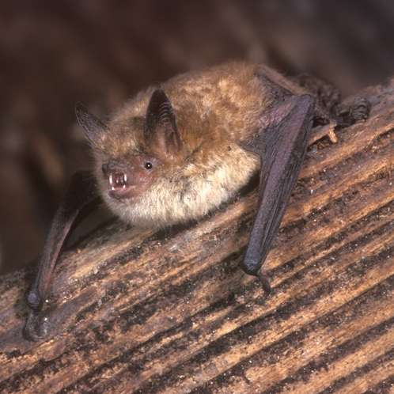
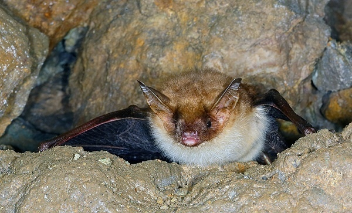
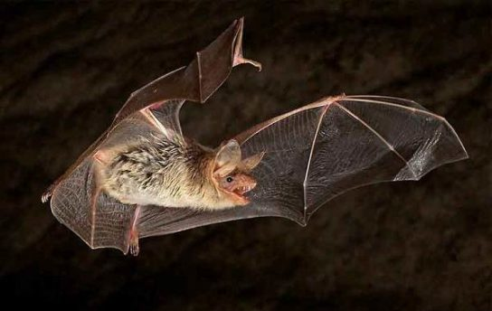

Этот зверек довольно мелкий, длина его тела — около 55 мм, вес достигает 10 г, а размах крыльев — 22–28 см. Мордочка слегка вытянутая, а маска розоватая и не покрыта шерстью.Трехцветные ночницы получили свое название за окрас их шерстки.
Трехцветной эта ночница называется потому, что на спине каждый волосок ее шубки имеет темное основание, светлую серединку и кирпично-красный кончик.

В России найден только в горных р-нах Краснодарского края. Вне России распространение охватывает Зап. и юж. часть Вост. Европы, Сев.-Зап. Африку, Переднюю и Среднюю Азию.
В пределах России приурочена к предгорным р-нам, известна по нескольким находкам в пещерах. В основной части ареала населяет как горные леса до 1800 м н.у.м., так и равнинные местообитания от полупустынь до ландшафтов паркового типа.
Образует выводковые колонии (до 300-400 особей, обычно значительно меньше) в пещерах, гротах, а также в постройках человека (церквях, старых зданиях и т.п.). Размножается раз в году; детеныш (всегда один) рождается в конце июня.
Молодые становятся на крыло примерно через месяц. Половой зрелости достигают, по-видимому, на втором году жизни. Периодом наибольшей смертности является зимовка, особенно для молодняка. Дальних сезонных миграций не совершает.
Насекомоядна: рацион включает до 11 отрядов и 37 семейств членистоногих, в ряде мест основа питания – пауки.

Занесена в Красный список МСОП-96. Необходимо организовать охрану крупных известных выводковых колоний и мест зимовок.
Для предотвращения прямого антропогенного воздействия необходимо регламентировать доступ людей в пещеры и участки зданий, где обнаружены крупные скопления вида, особенно в период размножения (июнь-середина августа) и зимней спячки (сентябрь-апрель).
Следует проводить разъяснительную работу среди местного населения, в частности, жителей и владельцев домов, где есть колонии этого вида. Опыт содержания трехцветной ночницы в неволе незначителен, случаи размножения неизвестны.